1. Resumo
O Dashboard é o data app React (Vite, Tailwind, Recharts, mapa em D3) servido pelo FastAPI, que reescreve o painel Streamlit da UFMG. São seis páginas: Início, Medicamentos, Compras, Leitos, Mapa e Fornecedores. O backend responde a Postgres ou a Snowflake com as mesmas rotas.
tests/parity/report.md)Publicado em app-intelligence-dadosferademo2 …/pbp-service-dataapp-…_8000/ (exige SSO Dadosfera). Os prints foram feitos em 24/09/2026 com o app local contra o Snowflake, em 1440×900, e também em 1024 px (largura do embed no Catálogo) e 390 px (celular). O script é docs/ux-review/capture.ts e as medições ficam em shots/notas.json.
As 5 recomendações que mais mudam a experiência
- Consertar a busca de medicamentos. A busca diferencia acento ("acido" traz 32 itens, "ácido" traz 200 e corta o resto) e ordena por byte: nenhum dos 200 resultados de "ácido" começa com "ÁCIDO". Propomos busca sem acento, prefixo primeiro, ordem em pt-BR e um campo único com autocomplete no lugar de "Buscar → select → Pesquisar".
- Compras abre zerada. O filtro padrão (últimos 12 meses) não tem nenhuma compra, porque a base só tem datas em 1º de janeiro de 2020 a 2025. Propomos abrir em 2020–2025, filtrar por ano e trocar "Evolução mensal" por barras anuais.
- Estados vazios que expliquem o que aconteceu. O primeiro resultado de "dipirona" (CATMAT 5176) não tem estoque e o usuário cai em KPIs 0/0/0, com o valor nulo exibido como 0. Propomos mensagem com causa e próximo passo, "sem dado" no lugar do nulo e um selo "com estoque" na lista.
- Shell e tipografia Beast. Header com logo Dadosfera e "Projeto EMBRAPII · DCC/UFMG", Quicksand, primário #1700a2, ícones Eva no lugar de emoji, números compactos (R$ 50,9 bi) e tabelas sem fonte mono nos nomes.
- Um padrão só de filtro e carga. Hoje cada página faz de um jeito: Fornecedores carrega sozinha, Compras e Leitos esperam clique mesmo com filtros prontos, Medicamentos e Mapa pedem três passos. Propomos carregar com o padrão ao abrir e aplicar mudanças com um botão "Aplicar". O mesmo pacote inclui code-split por rota (o JS hoje é um arquivo único de 787 kB).
2. Achados transversais
Valem para várias páginas. Cada item tem um código (G1…G11) que as seções de página e o checklist final referenciam.
| # | Problema | Impacto | Evidência | Esf. |
|---|---|---|---|---|
| G1 | Identidade fora da Beast: paleta azul #28638f e teal, fontes Space Grotesk/Inter, título da aba "Dashboard". O header não diz de que projeto é o painel. | No Catálogo da Dadosfera o app parece um produto de terceiros. Com várias abas abertas, "Dashboard" não identifica nada. | src/index.css, index.html, todos os prints | M |
| G2 | Emoji como ícone nos títulos e cards (💊 🛒 🛏️ 🗺️). O Mapa usa rótulo "VISÃO GEOGRÁFICA" em vez de emoji e Fornecedores não usa nenhum dos dois. | Renderização muda por sistema operacional; visual informal para um painel institucional. | home.png, compras.png, fornecedores.png | P |
| G3 | Toda célula de tabela usa JetBrains Mono (tbody td), inclusive razão social em caixa alta. | Nomes longos ficam difíceis de ler e empurram as colunas numéricas para fora da tela (ver F3). | fornecedores.png, compras-2020-2025.png | P |
| G4 | Valores grandes sem abreviação. O KPI "R$ 50.941.327.779,40" quebra em duas linhas; eixos Y cortam o rótulo ("0.000.000.000,00"). | A ordem de grandeza, que é o que o leitor precisa, some. | compras-2020-2025.png | P |
| G5 | Linhas com curva suavizada (type="monotone") ligando pontos anuais. A curva inventa vales e picos entre os anos e os pontos não caem sobre os rótulos do eixo X. | Sugere variação intra-ano que não existe na base. | medicamentos-85.png, compras-2020-2025.png | P |
| G6 | Cada página carrega de um jeito. Fornecedores carrega ao abrir; Compras e Leitos só depois de clicar "Pesquisar"/"Aplicar filtros"; Medicamentos e Mapa pedem digitar, "Buscar", escolher num select e clicar de novo. A página Compras manda clicar em "Aplicar filtros", mas o botão se chama "Pesquisar". | Quem abre Compras ou Leitos vê só o formulário e um aviso cinza. | compras.png, leitos.png, Compras.tsx:1513 | M |
| G7 | Busca CATMAT: ILIKE diferencia acento e o ORDER BY é por byte (COLLATE "C" no Postgres, padrão no Snowflake). Palavras com letra acentuada no início vão para depois do Z e o limite de 200 as corta. A mesma descrição aparece com códigos diferentes (4× "DIPIRONA SÓDICA 500 MG COMPRIMIDO": BR…, BRB…, BRO…, BRS…) sem explicação da diferença. | "ácido" traz 200 itens e nenhum é "ÁCIDO …"; "ácido fólico" começa por "FERRO … ÁCIDO FÓLICO". "dipirona" começa por CARISOPRODOL (5176, sem estoque) e DEXAMETASONA; o item 85, usado como referência nos testes, é o 55º de 68. | GET /api/medicamentos/busca?q=acido (32) × q=ácido (200); notas.json › med_opcoes | M |
| G8 | Em 390 px o menu rola na horizontal sem indicação e esconde Mapa e Fornecedores. Em Medicamentos, o campo de busca encolhe para ~20 px de altura. | No celular, duas páginas parecem não existir e a busca fica difícil de tocar. | home-390.png, medicamentos-85-390.png | P |
| G9 | Em 1024 px (embed no Catálogo) as tabelas largas escondem colunas atrás de rolagem interna. Em Compras só "Fornecedor" e "Valor total" ficam visíveis. | Participação %, compras e itens não aparecem sem rolar a tabela de lado. | compras-2021-1024.png | P |
| G10 | Acessibilidade: botão desabilitado com texto branco sobre #dedfdd (1,34:1); placeholder a 3,57:1; mapas mostram valor só no hover ("Passe o mouse sobre uma UF"); abas com role="tab" sem aria-controls nem setas; séries azul #28638f e teal #067782 quase iguais (1,17:1 entre si). | Falha WCAG AA em contraste. Mapa inacessível por teclado e toque. Legenda de Leitos não separa as séries. | cálculo de contraste; mapa-85.png, leitos-aplicado.png | M |
| G11 | Um único bundle JS de 787 kB (Recharts, D3, TanStack e as 6 páginas). | Primeira carga mais lenta dentro do proxy do Orchest; quem só usa Leitos baixa o mapa inteiro. | dist/assets/index-DnOgpyC2.js (787.102 bytes) | P |
3. Início
{kind=link}
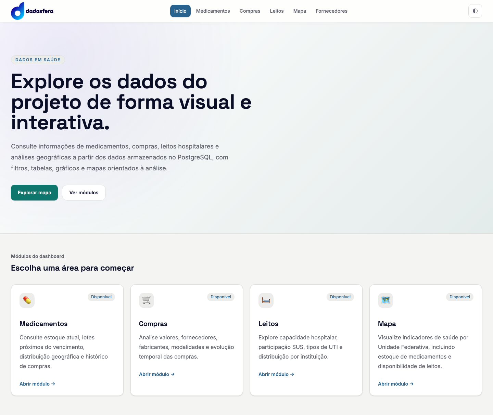
{kind=link}
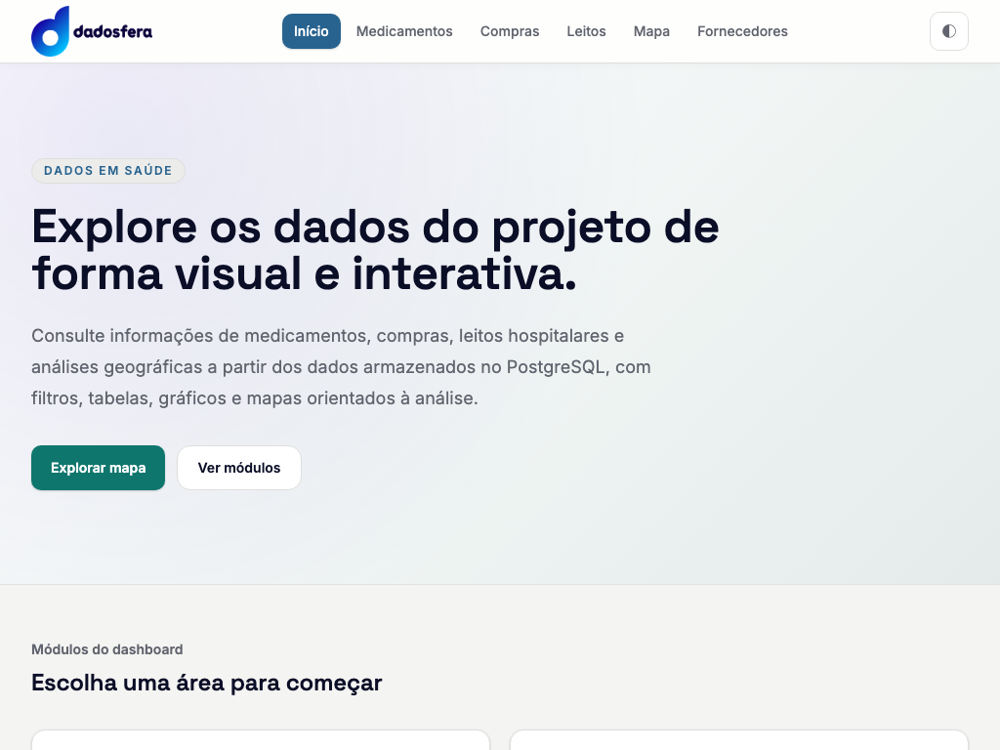
| # | Problema | Impacto | Evidência | Esf. |
|---|---|---|---|---|
| H1 | O texto diz "a partir dos dados armazenados no PostgreSQL"; o app publicado lê do Snowflake. | Informação errada na primeira tela. | Home.tsx, home.png | P |
| H2 | A grade "Módulos" tem 4 cards; o menu tem 5 páginas. Falta Fornecedores. | A página mais nova não aparece no ponto de entrada. | home.png | P |
| H3 | "Ver módulos" (href="#modulos") recarrega o documento inteiro sob o prefixo do Orchest quando o usuário voltou ao Início pelo menu ou pelo logo: o router gera a URL sem barra final e o <base href> resolve a âncora para outra URL. | Recarga de 1 a 2 s e perda de estado, justo no botão de navegação da Home. | notas.json: modulos_url_apos_inicio …/pbp-test_8000 → …/pbp-test_8000/#modulos, modulos_recarregou: true | P |
| H4 | Hero genérico ("Explore os dados…") sem nenhum número. Selo "Disponível" repetido em todos os cards. | A Home não mostra cobertura nem atualidade dos dados, e o selo não diferencia nada. | home.png | P |
Proposta
- Hero curto com três números de cobertura vindos de endpoints que já existem: período das compras (2020–2025), competência de leitos (01/2026) e registros de compra. Texto corrigido para "Snowflake / Dadosfera".
- Cinco cards (entra Fornecedores), ícone Eva, sem selo "Disponível".
- "Ver módulos" com
scrollIntoViewno clique, sem depender da âncora.
4. Medicamentos
{kind=link}
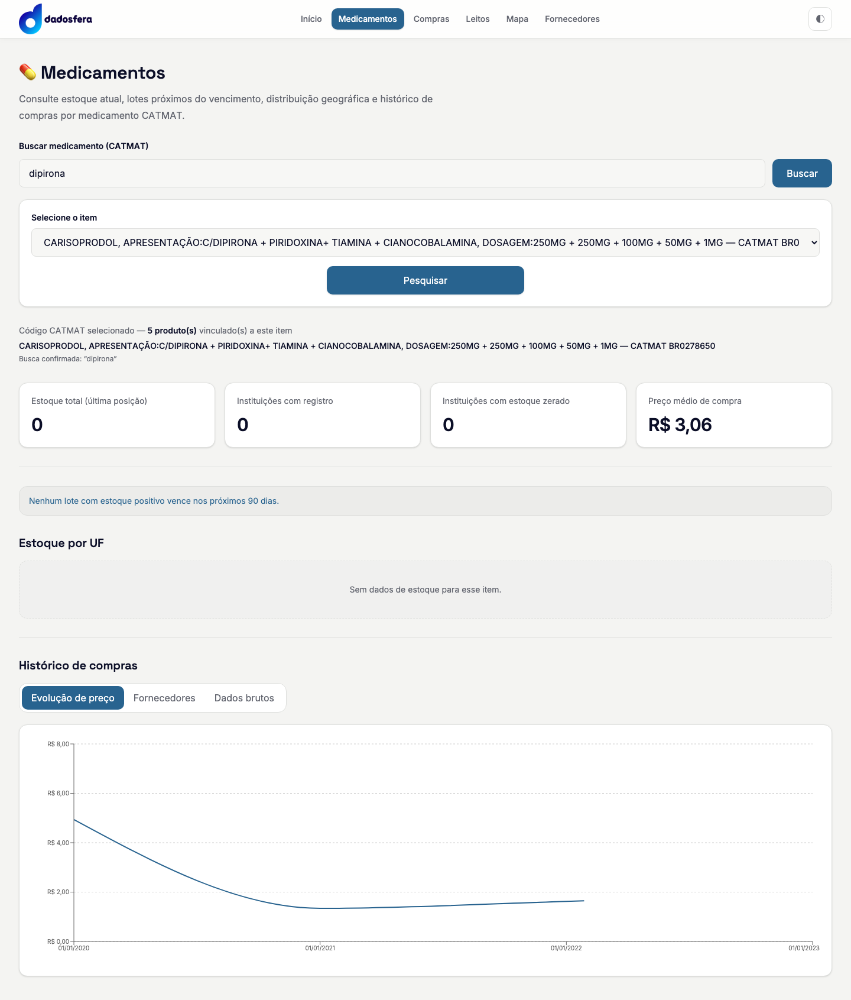
{kind=link}
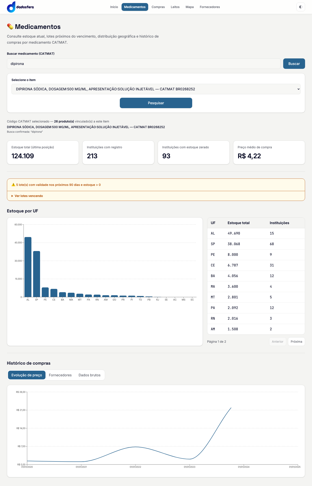
| # | Problema | Impacto | Evidência | Esf. |
|---|---|---|---|---|
| M1 | Três passos para ver um item: digitar e "Buscar"; escolher num <select> de até 200 opções, com descrições de 150+ caracteres cortadas; clicar "Pesquisar". Antes da escolha, o botão desabilitado fica ilegível (G10). | O fluxo mais usado do app é o mais lento. No select nativo não dá para filtrar nem ler a descrição inteira. | medicamentos-5176-vazio.png | M |
| M2 | O primeiro resultado de "dipirona" (5176) não tem estoque. A tela mostra 0 / 0 / 0 e "R$ 3,06". "Instituições com estoque zerado" mostra 0 quando a API devolve null. Nenhuma mensagem explica que o item não tem registro de estoque. | Parece defeito do painel; o usuário não sabe que precisa escolher outro item. | GET /api/medicamentos/5176/resumo → instituicoes_estoque_zerado: null | P |
| M3 | Ordem dos resultados (G7): associações vêm antes do princípio ativo puro e não há sinal de quais itens têm dados. | O usuário escolhe às cegas e costuma cair num item vazio. | notas.json › med_opcoes | M |
| M4 | "Evolução de preço" com curva suavizada (G5) e sem unidade: R$ por unidade de fornecimento? por ampola? | O salto para R$ 21 em 2023–2024 do item 85 pode ser troca de apresentação, e o gráfico não permite saber. | medicamentos-85.png | P |
| M5 | "Estoque por UF" mostra 20 barras e, ao lado, uma tabela paginada de 10 linhas com o mesmo dado. | É preciso paginar para ver na tabela o que o gráfico já mostra. | medicamentos-85.png | P |
Proposta
- Campo único com autocomplete (debounce de 300 ms). Cada resultado mostra descrição em duas linhas, código CATMAT e selo "com estoque" ou "sem estoque". A carga começa ao escolher, sem botão extra.
- Busca sem acento, com prefixo primeiro e ordem pt-BR (G7). É mudança de SQL nas rotas atuais, sem endpoint novo. O selo de estoque depende de dado que a busca não traz hoje e está em Fora do escopo; sem ele, o mock fica só com a ordem nova.
- Estado vazio com causa e saída: "Este CATMAT não tem posição de estoque. O histórico de compras está abaixo." KPI nulo mostra "sem dado".
- Preço como linha reta com marcador por ano e unidade no título ("R$ por unidade de fornecimento"). Tabela de UF sem paginação (27 linhas cabem) ou só o gráfico.
CATMAT BR0267203U0042com estoque
CATMAT BR0268252 · 26 produtoscom estoque
CATMAT BR0267205U0063com estoque
CATMAT BR0278650sem estoque
Nenhuma instituição informou estoque deste item. O histórico de compras continua disponível abaixo.
Ver comprasEscolher outro itemOs selos dependem de dado que a busca não traz hoje (ver Fora do escopo). Sem eles, fica só a ordem nova.
5. Compras
{kind=link}
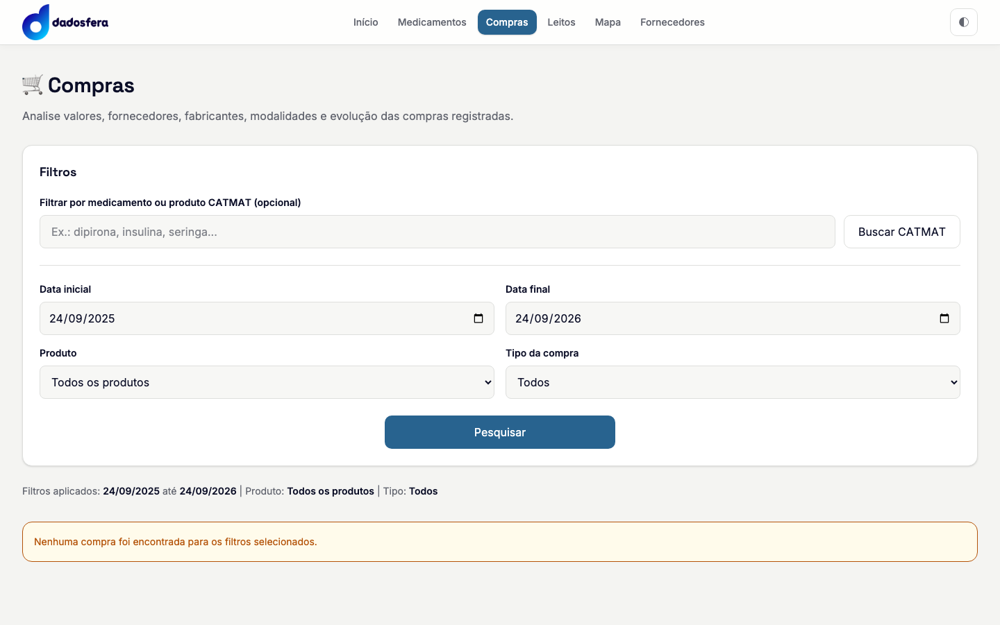
{kind=link}
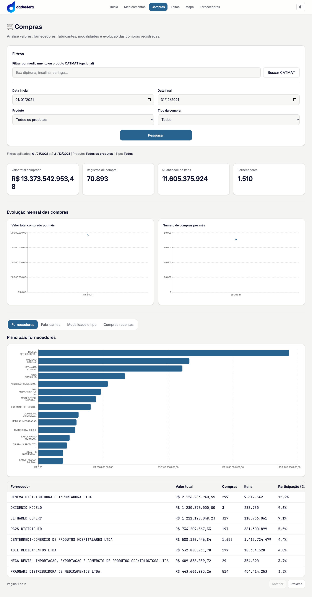
{kind=link}
{kind=link}
| # | Problema | Impacto | Evidência | Esf. |
|---|---|---|---|---|
| C1 | O padrão é "últimos 12 meses até hoje" e a base só tem compras de 2020 a 2025. A página abre (depois do clique) com zero resultado. | Primeira impressão de página quebrada. | GET /api/compras/kpis?data_inicio=2025-09-24&data_fim=2026-09-24 → tudo 0 | P |
| C2 | Toda compra está datada em 1º de janeiro. "Evolução mensal" e "por mês" mostram um ponto por ano, e os filtros de data por dia sugerem uma precisão que a base não tem. | Filtrar "março a junho" devolve vazio; o gráfico de 1 ano mostra um ponto só. | GET /api/compras/por-mes?2020…2025 → 6 linhas, todas AAAA-01-01 | M |
| C3 | Um registro de R$ 22,7 bi (MEDICAL MERCANTIL, 2025) responde por 44,6% do valor de 2020–2025 e por 98% do valor de 2025, que tem 2.474 compras. | Achata o gráfico de fornecedores e distorce o KPI "Valor total". Se for erro de carga, o painel propaga o erro. | GET /api/compras/fornecedores?2025: 1 compra, R$ 22.702.930.272 | P |
| C4 | O KPI de valor quebra em duas linhas; eixos cortados (G4). | Leitura difícil do número principal. | compras-2020-2025.png | P |
| C5 | Rótulos do gráfico de fornecedores cortados em três linhas de ~10 caracteres ("MEDICAL MERCANTIL D…"). | Não dá para ler quem é quem sem ir à tabela. | compras-2020-2025.png | P |
| C6 | Dois formulários para um filtro: "Buscar CATMAT" preenche o select "Produto", e só depois vem "Pesquisar". Opções de tipo em caixa alta (ADMINISTRATIVA, JUDICIAL). | Mesmo atrito de M1. | compras.png | P |
Proposta
- Abrir já carregado em 2020–2025, sem clique. Os limites vêm de
/api/compras/por-mescom intervalo amplo, rota que já existe. - Trocar as datas por seletor de ano (de/até, ou "todos"). Os dois gráficos viram barras anuais com rótulo de valor.
- Números compactos (R$ 50,9 bi), com o valor exato no tooltip.
- Registro que sozinho passe de 20% do total ganha barra hachurada e nota ("1 registro = 44,6% do valor"). A correção do dado fica com a UFMG (Fora do escopo).
- Gráfico de fornecedores com top 10 e nome inteiro à esquerda; filtro de produto no mesmo autocomplete de Medicamentos.
* 1 registro (MEDICAL MERCANTIL) = R$ 22,7 bi, 98% do ano. Valores reais de /api/compras/por-mes.
6. Leitos
{kind=link}
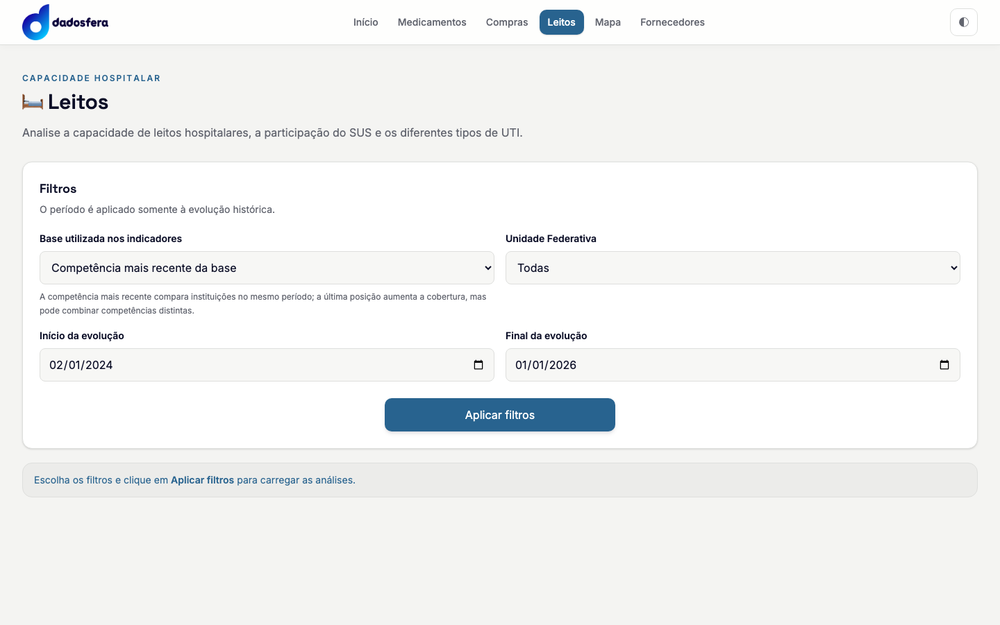
{kind=link}
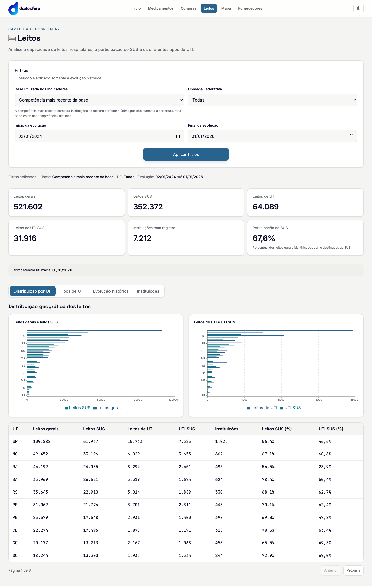
| # | Problema | Impacto | Evidência | Esf. |
|---|---|---|---|---|
| L1 | Os filtros vêm prontos (competência mais recente, todas as UFs), mas nada carrega até o clique (G6). | Um clique a mais para ver o óbvio. | leitos.png | P |
| L2 | "Início da evolução" padrão em 02/01/2024: o código subtrai 730 dias em vez de 24 meses. | Detalhe, mas soa como erro de dado. | Leitos.tsx (subtrairDias(…, 730)) | P |
| L3 | Barras horizontais agrupadas para 27 UFs, com rótulo em uma de cada quatro (RJ, PR, GO…). As duas séries têm cores quase iguais (1,17:1). | O gráfico principal da página não se lê; só a tabela responde "qual UF". | leitos-aplicado.png | M |
| L4 | Seis KPIs em grade 3×2 com o mesmo peso; "Participação do SUS" é o único com explicação. | Não há leitura principal. | leitos-aplicado.png | P |
| L5 | As datas ficam no bloco de filtros gerais, mas só afetam a aba "Evolução histórica" (o aviso diz isso em letra pequena). | O usuário muda o período e nada muda nas outras abas. | leitos.png | P |
Proposta
- Carregar com o padrão ao abrir; datas movidas para dentro da aba Evolução. Início em 24 meses exatos.
- KPIs em dois níveis: Leitos gerais e % SUS em destaque; UTI, UTI SUS e instituições em linha secundária.
- Por UF: um gráfico só, barras empilhadas SUS / não SUS ordenadas por total, as 27 UFs rotuladas, altura de 22 px por barra e seletor "Gerais | UTI". Cores Beast primária e secundária (#1700a2 / #28a1ce).
7. Mapa
{kind=link}
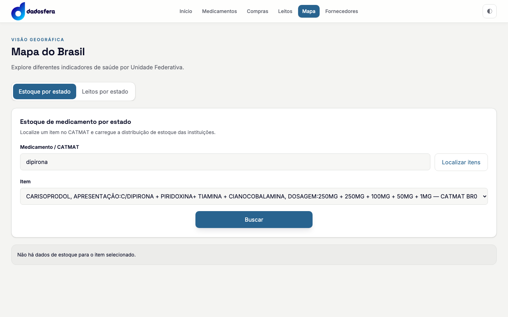
{kind=link}
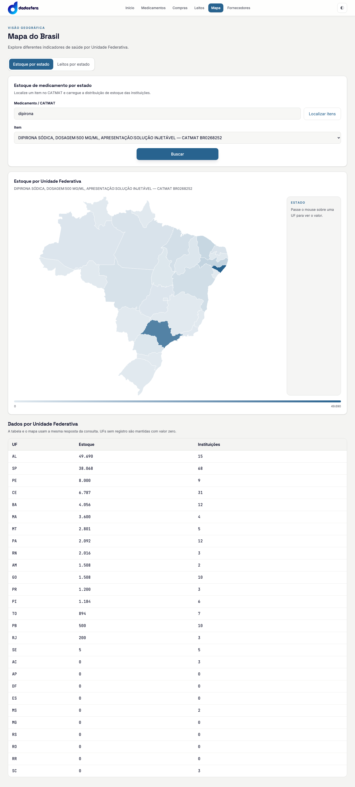
Aba de leitos: mapa-leitos.png.
{kind=link}
| # | Problema | Impacto | Evidência | Esf. |
|---|---|---|---|---|
| MP1 | Mesmo caminho vazio de M2: o primeiro resultado não tem estoque e a resposta é uma linha cinza sem sugestão. | Primeira interação termina em beco sem saída. | mapa-5176-vazio.png | P |
| MP2 | Escala contínua linear de 0 ao máximo, com legenda "0 … 49.690" sem faixas. Um outlier apaga a variação do resto. UF com estoque 0 e UF sem nenhum registro recebem a mesma cor (AC: 3 instituições com 0; AP: nenhuma instituição). | O mapa não responde "onde há mais estoque" além do primeiro lugar e mistura "zerado" com "sem dado". | mapa-85.png, tabela da mesma tela | M |
| MP3 | O painel "Estado" ocupa cerca de 15% da largura e fica vazio até o hover. Não funciona com teclado nem toque (G10). | Espaço perdido; no celular o valor por UF não aparece. | mapa-85.png | P |
| MP4 | Leitos em número absoluto: o mapa repete a distribuição da população (SP escuro). | Não informa disponibilidade relativa. | mapa-leitos.png | P |
| MP5 | A página repete conteúdo: estoque por UF já existe em Medicamentos e leitos por UF em Leitos, com outra visualização. | Dois lugares para a mesma pergunta, com respostas visuais diferentes. | comparação medicamentos-85.png × mapa-85.png | M |
Proposta
- Escala por quantis em 5 classes, com legenda de faixas; hachura cinza para "sem registro", distinta de "0".
- Tooltip no hover e clique ou Enter fixa a UF. Sem UF escolhida, o painel lateral mostra as 5 maiores.
- Leitos: métrica padrão "% SUS" (já vem da API); leitos por habitante fica em Fora do escopo.
- Decisão pedida (D17): transformar o mapa em componente dentro de Medicamentos e Leitos e tirar a página do menu, ou manter a página.
8. Fornecedores
{kind=link}
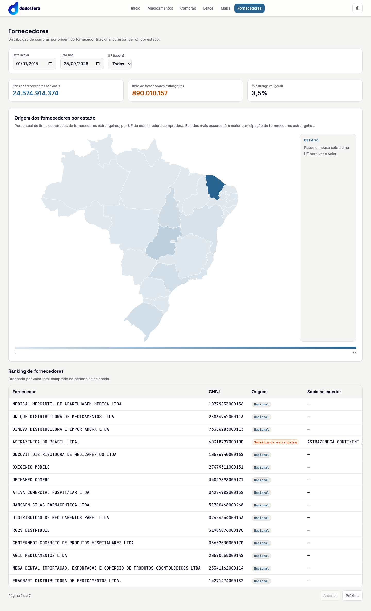
| Fornecedor | Valor | Part. | Origem |
|---|---|---|---|
| Medical Mercantil de Aparelhagem Médica | R$ 22,7 bi | 44,6% | Nacional |
| Unique Distribuidora de Medicamentos | R$ 2,2 bi | 4,3% | Nacional |
| AstraZeneca do Brasil sócio no exterior: AstraZeneca Continent… | R$ 1,9 bi | 3,7% | Subsidiária estrangeira |
CNPJ formatado vai para uma linha de detalhe ou tooltip.
| # | Problema | Impacto | Evidência | Esf. |
|---|---|---|---|---|
| F1 | Layout diferente das outras cinco páginas: sem ícone nem rótulo, filtros compactos em linha, carga automática. | Parece outro app (é a página que veio de outro autor). | fornecedores.png | P |
| F2 | A data final padrão usa toISOString() (UTC). Depois das 21h em Brasília, mostra o dia seguinte. | O print de 24/09 às 22h mostra 25/09/2026. | Fornecedores.tsx:66, fornecedores.png | P |
| F3 | A 1440 px a tabela transborda: Valor total, Itens e Nº de compras ficam fora da tela, e "Sócio no exterior" aparece cortado. CNPJ sem máscara. | A coluna que ordena o ranking não aparece sem rolagem lateral. | fornecedores.png | P |
| F4 | Mapa com legenda "0 … 65" sem unidade (é %). Com a mesma escala linear de MP2, só o CE (65%) se destaca. Os KPIs somam "itens" de apresentações diferentes (24,5 bi). | Lê-se mal; soma de unidades heterogêneas não tem significado físico. | fornecedores.png | P |
| F5 | O rótulo "UF (tabela)" explica em parênteses que o filtro não afeta o mapa. Período padrão começa em 2015; a base começa em 2020. | Filtro com escopo parcial e período padrão sem motivo aparente. | fornecedores.png | P |
Proposta
- Mesmo cabeçalho e barra de filtros das demais páginas; período padrão 2020–2025, por ano, igual a Compras; data local em vez de UTC.
- Tabela: Fornecedor, Valor, Participação e Origem. CNPJ e sócio no exterior vão para a linha de detalhe. Nomes em Quicksand, números alinhados à direita.
- Mapa com legenda em faixas de % e unidade; clicar numa UF filtra a tabela, o que substitui o select "UF (tabela)".
9. Identidade Beast
O Dashboard continua em React. A proposta troca os valores da camada semântica que já existe em src/index.css (o @theme inline remapeia teal-* e slate-* para variáveis). Quase nenhum componente precisa mudar para trocar a pele.
| Variável atual | Hoje | Token Beast | Valor |
|---|---|---|---|
--color-brand-blue (botões, aba ativa, links) | #28638f | color-primary-500 | #1700a2 |
--color-cta (CTA teal da Home) | #0f766e | color-primary-500 (um CTA só) | #1700a2 |
--step-5 (2ª série dos gráficos) | #067782 | color-secondary-500 | #28a1ce |
--bg / --panel / --border | #f4f4f2 / #fff / #dedfdd | basic-200 / basic-100 / basic-500 | #f9f9f9 / #fff / #dfdfdf |
--text / --text-muted | #0b0e27 / #62656f | basic-1000 / basic-700 | #222 / #939393 (escurecer para ≥ 4,5:1) |
--success / --warning / --danger | #047857 / #b45309 / #b91c1c | success / warning / danger-500 | #4db04f / #ff9800 / #ef4444 (texto em tom 700) |
--font-display / --font-body | Space Grotesk / Inter | fonte Beast | Quicksand (Open Sans de fallback) |
--font-mono | JetBrains Mono em toda célula | (sem token) | só números: tabular-nums, alinhados à direita |
| Ícones | emoji + caracteres ◐ ☀ ☾ | Eva Icons | eva-icons (SVG) ou o pacote React |
O que muda no shell
Aba do navegador: "Dashboard EMBRAPII · Dadosfera". Em 390 px o menu vira um botão com ícone Eva menu-outline (G8).
- Header com logo Dadosfera oficial e o bloco "Projeto EMBRAPII · DCC/UFMG". Título da aba com o nome do projeto.
- Cabeçalho de página padrão (ícone Eva + título + uma linha de descrição) nas seis páginas, incluindo Fornecedores.
- Componentes comuns extraídos:
PageHeader,FilterBar,KpiCardcom formato compacto,EmptyState,ChoroplethLegend. Hoje cada página repete as mesmas classes Tailwind longas. - O tema escuro existe e funciona. Ver D19.
10. Pendências fora do escopo
Precisam de endpoint novo, dado novo ou decisão da UFMG. Ficam listadas aqui e não entram no Plano B.
| Item | Por que depende de algo novo | Relacionado a |
|---|---|---|
| Selo "com estoque / com compras" nos resultados da busca e ordenação por presença de dados | A busca lê só o catmat; exige um join ou flag pré-calculada e novo campo na resposta. | M1, M3, MP1 |
Rota de intervalo de datas de Compras (/api/compras/intervalo) | Dá para contornar com por-mes (proposta C1); a rota dedicada é mais limpa. | C1 |
| Data efetiva da compra (hoje sempre 1º de janeiro) | Dado de origem; sem ele não existe série mensal. | C2 |
| Validação do registro de R$ 22,7 bi (MEDICAL MERCANTIL, 2025) e regra de outliers | Qualidade de dado; decisão com a UFMG. | C3 |
| Leitos por 1.000 habitantes | Precisa da população IBGE por UF e de uma rota nova. | MP4 |
| Participação estrangeira por valor (R$) em vez de itens | mapa-por-uf agrega itens; exige outra agregação. | F4 |
| "Dados atualizados em …" no rodapé | Não há rota de metadados da carga. | H4 |
A busca sem acento e com ordem pt-BR (G7) não é endpoint novo: muda o SQL da rota atual nas duas versões (Q(pg, sf)). No Snowflake, COLLATE 'pt-ai'; no Postgres, extensão unaccent ou collation ICU. O teste de paridade da busca precisa ser atualizado junto.
11. Decisões pedidas ao Allan
Marque aprovar ou rejeitar em cada item. O Plano B é escrito só com os aprovados.
- ☐ aprovar ☐ rejeitarShell Beast: tokens da seção 9, Quicksand, header com logo e "Projeto EMBRAPII · DCC/UFMG", título da aba (G1). M
- ☐ aprovar ☐ rejeitarEva Icons no lugar de emoji e cabeçalho de página padrão nas 6 páginas (G2, F1). P
- ☐ aprovar ☐ rejeitarTabelas legíveis: mono só em números, valores à direita, colunas prioritárias primeiro, sem transbordar em 1024 px (G3, G9, F3). P
- ☐ aprovar ☐ rejeitarNúmeros compactos em KPIs e eixos (R$ 50,9 bi), com valor exato no tooltip (G4, C4). P
- ☐ aprovar ☐ rejeitarGráficos de série sem curva suavizada: linha reta com marcadores ou barras (G5, M4). P
- ☐ aprovar ☐ rejeitarCarregar com o padrão ao abrir em Compras, Leitos e Mapa-leitos, com botão único "Aplicar" para mudanças (G6, L1). M
- ☐ aprovar ☐ rejeitarBusca CATMAT sem acento, prefixo primeiro, ordem pt-BR, com aviso quando passar de 200 resultados. Muda SQL nas duas engines e o teste de paridade (G7, M3). M
- ☐ aprovar ☐ rejeitarAutocomplete único no lugar de Buscar → select → Pesquisar, em Medicamentos, Mapa e Compras (M1, C6). M
- ☐ aprovar ☐ rejeitarEstados vazios com causa e ação; nulo como "sem dado" (M2, MP1). P
- ☐ aprovar ☐ rejeitarCompras abre em 2020–2025 e filtra por ano; "Evolução mensal" vira barras anuais (C1, C2, F5). M
- ☐ aprovar ☐ rejeitarSinalizar outlier (registro com mais de 20% do total) com hachura e nota, sem remover o dado (C3). P
- ☐ aprovar ☐ rejeitarLeitos: KPIs em dois níveis, datas dentro da aba Evolução, 24 meses exatos, barras empilhadas com as 27 UFs rotuladas (L2–L5). M
- ☐ aprovar ☐ rejeitarMapas com escala por quantis, legenda em faixas com unidade e "sem registro" distinto de zero (MP2, F4). M
- ☐ aprovar ☐ rejeitarMapa acessível: tooltip, clique/Enter fixa UF, painel com top 5; clique na UF filtra a tabela em Fornecedores (MP3, F4, G10). P
- ☐ aprovar ☐ rejeitarHome: texto corrigido (Snowflake), card de Fornecedores, hero curto com números de cobertura, "Ver módulos" sem recarga (H1–H4). P
- ☐ aprovar ☐ rejeitarCorreções de data: data local em Fornecedores e período padrão 2020–2025 (F2, F5). P
- ☐ manter página ☐ virar componentePágina Mapa: manter no menu ou embutir o mapa em Medicamentos e Leitos e tirar a página (MP5). M
- ☐ aprovar ☐ rejeitarMobile e acessibilidade: menu com botão em 390 px, campo de busca com altura fixa, contraste AA em desabilitado e placeholder, abas com teclado (G8, G10). P
- ☐ manter ☐ removerTema escuro: manter o alternador (exige versão escura dos tokens Beast) ou deixar só o tema claro. P
- ☐ aprovar ☐ rejeitarCode-split por rota (
React.lazy) para quebrar o bundle de 787 kB (G11). P